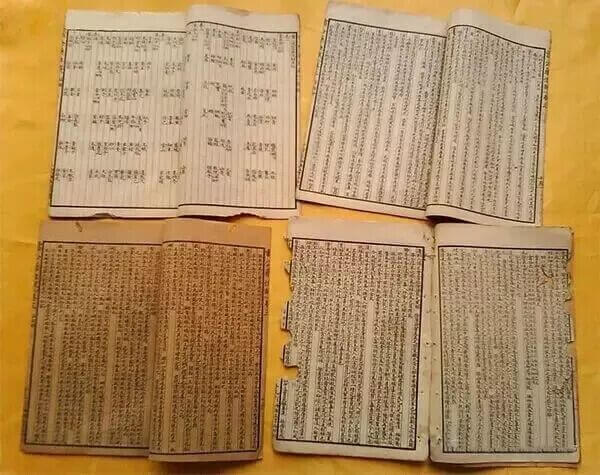

满足不了女人？用这个方法，每次坚挺60分钟!真实经历分享，男同胞必看！
“如果你坚挺，我陪你翻云覆雨，如果你不举，我也一定安分守己！”做为男人，你会相信女人这样的情话吗？
男人，应该是随时随地都能与她翻云覆雨，让她娇喘连连，呻吟不已！否则不可能有女人的安分守己！疲软无力，时间太短，甚至坍塌不举是成年男人心里最痛的伤！！一招教你搞定！
杨老师，您这个秘方，简直太猛了！才吃了三天，坚持不泄！一浪高过一浪，把老婆搞得扶墙走。关键我人也精神了，以前撸太多，撸得头晕眼花，但是现在生龙活虎！！
（某游戏代练小王，见到就竖大拇指！）
杨老师，我服了！我吃过那多补肾的、壮阳的，都没您这个厉害！昨天和网友见面，为以前阳痿的我报仇雪耻了！
（某大型医院西药房的主任也找）
杨老师，您家祖传秘方真是绝了！我现在感觉像回到20几岁！昨天和小三在锦江酒店，通宵大战一夜。哈，真带劲！！
真是用心良苦，，味道还挺不错，最主要是效果显著！谁用谁知道~哈（武汉某公司胡总高兴不已！）
(长按识别二维码， 添加微信 ，马上获得补肾强肾秘方)
“你硬度不够，虚汗，脱发，腰膝酸软，是典型的肾阳虚，肾精不足，先从补元阳开始。”
“你时间短、耳鸣、乏力、尿频，是肾气虚，从血气平衡开始调理，血气足则元气恢复，肾气回春。”
“你阳痿不举，白发脱发，尿急尿频，脾气暴躁是肾精透支，肾虚引发肝气郁结，先从补气化瘀，补元填精开始！”
“你精液量少，精虫活力不足，时间短，尿路不畅，是元气不足，肾精不负，要从补元开始，调理气血为辅！”
其实，每位男人都是有尊严、面子，有些隐私的，又不好当面跟我说出来，常常私下里说“，加个微信吧!”。我不得不在学生的帮助下，边学边用，也开始用上了微信，给朋友们讲讲男人的男事，说说不便开口的私事，告诉一些行之有效的中医调养之法。
快枪手、秒射男、疲软汉、短小男……看完下面，一定有你急需的答案……
无论你是肾亏肾虚、阳痿、早泄、疲软难起、有心无力、时间短快、举而不坚、坚而不久.....还是尿急尿频、少精无精、多年不育、短小萎缩等男科问题，他总能找到适合你的调理方法，并且行之有效，立杆见影......
说说年纪，看看舌苔，讲讲自己的症状，不用把脉，靠几十年的经验和家传之道，就能给你说个清清楚楚，一说一个准。再根据不同的人，不同的体质，不同的症状，用不同的补肾方组方调理，立杆见影，变化惊人——
1、武汉38岁的许总，无法勃起、脱发严重、睡眠不好、起夜3次。给他调补1星期，睡眠好了，不起夜了。能随心所欲，一硬到底，威武霸气，无论床上、沙发上、阳台，都把老婆“收拾
”得服服帖帖。
2、信阳44岁的彭先生，每次都秒射，乏力、虚汗……给他调补不到半月，他人变得底气十足，面对如花似玉的老婆，硬气无比，每次都能一杆进洞！他说，有了补肾方，解锁“九九八十一式”都不在话下。
3、南京45岁的何老板，3年前一次酒吧艳遇后，彻底阳痿掉了，老婆闹离婚分家产，他借酒浇愁。给他开方一用，短短20天就好了。现在的他成了床战高手，面对新娶的30岁老婆，坚挺持久，照样应付自如！
4、贵阳31岁的李先生，结婚6年无孩子，最后查出是自己的问题----精虫少，用补肾方给他调理不到2
月的时间，老婆就怀上了，后来一查，还是双胞胎！
透露男人第一大秘密：
《中医药谱》中＂男子火衰＂论的核心意思：男子阳痿、疲软其实是元火衰退引发的肾虚现象，补肾不补元，只是隔靴抓痒而已！要想真正补肾，首先补元。（元，就是元气，元阳，元火，皆源自先天，来自父母，后天使用过甚，或使用不当即可致虚弱，衰败！）
肾 虚阳痿，本质就是命门火衰引起了肾精亏损。肾精亏损则会感觉身体各个器官使不上劲，每天感觉很累，疲劳乏力、腰酸背痛，头晕眼花，心慌气短，盗汗、高血 脂、便秘不说，膀胱的“水龙头”拧不紧，憋不住尿，尿频、尿急，夫妻生活中生殖器不听使唤、有心无力、一触即溃、疲软、勃起无力……最后至阳痿、早泄。

（
《中医谱》第二篇男科杂论整理中▲ 它科学论述了男人“精、腺、性、欲”的解决办法！）
(长按识别二维码， 添加微信 ，马上获得补肾强肾秘方)
透露男人第二大秘密：
“中医强肾方，最主要的特性，就是采用了中医传承下来的独特“以强引强”的配制，用强猛之方做药引子，打开数十种强猛之方。犹如威力强大的炸药包，放一个快速燃点的引线一样，点燃引线，数种强效同时迸发，即快速又有效，且不伤药路！
中医强肾方，是中医谱中详细记载，并一直传承下来的，其效迅猛，而又禀性绵长，即打开了药路，也长期保障了肾精的充沛。即有快速之效，也有长远的强肾固精之奇效。”
《健康男人》采访摘录——
男人吃壮阳药为什么只管一次？而且越吃越痿？
中医强肾方为何被男人疯抢？有何独特之处？
为何被无数男人称为“李十斤”？是何意？
男人吃补肾方，为何三天见真招？
杂志社记者金羽带着许多疑问采访了……
金羽：杨老师，许多男子出现疲软无力、时间短快就买性保健品壮阳，但都是一次性，事后还腰膝酸软，头昏头痛，仿佛像大病一场！
杨老师：是 这样的，那为什么呢？我打个比方，男子的肾是一口井，肾精是井水，井水不多时继续用水，那就是泥水各一半了，泥都提出来了，井就塌方了，成了枯井。那这里
的泥，就是我们说的元气，根源！用壮阳药就是开始泥水并用了，用着用着就软痿了，不起了！所以，我建议男同志尽量别吃壮阳药，中药补肾也得谨慎而为！井的 水源来自泥的储水和吸水，没有泥的井，还是枯井一口！要解决男子疲软无力、时间短快，最可取的是先补元，补元气，补元阳！
金羽：那老百姓为啥叫您“十斤老中医”？
杨老师：补 肾方集是中药之精华，素有“十斤材，熬一盒药”之说。补肾方和其他的确有不同。祖辈一直是艺与技的传承，配方选材的工艺和熬炼出药的技术都必须按书谱上记
载的来操作。只有熬药的技术，没有一人一的特制配方和认真选材，出的药再好看，那效果就难说了！所以，我们每天熬药的量，最多十斤，绝不含糊！后来，等待 熬药的人多了，就总是埋怨，咋不多熬点！十斤老中医的绰号也就出去了。
金羽：您这不是绰号，是美称啊！
长按识别下方二维码，添加老师微信，获取补肾强肾秘方
男人们的回音：
我也长出 “三条腿” 老婆再也不后悔
我40刚出头，做生意的，今年发现那方面不行了，一个月勉强来一次，还索然无味。硬度不行，后来用的补肾方，没想到焕发了“第二春”！
刚用3天左右，晚上我就发现跟以前很不一样，变得粗壮挺拔！当时我就控制不住了，马上和老婆来了一次，没想到越战越勇。
“
死鬼，你今天是咋了？好像一下子变成小伙子了！”
老婆软绵绵的酥胸压在我胸膛上，妩媚的娇嗔着，有气无力，让我幸福无比！
解放老前 “ 腺 ” 重回革命前
我 是军人出身的，身体方面一直很健朗，可几年的机关工作让我坐出了前列腺增生，老往厕所跑，在办公室根本坐不住，所以提前从工作岗位上退了下来。在这之后， 老婆陪着我去过市内多家医院求治，但前列腺增生反反复复一直恢复不彻底，每晚起夜4、5次，骚扰家人，苦恼自己。没办法，老婆和我只好“分居”。那方面更
是进入了性生活的“休眠期”。
后 来贴心的老婆鼓励我用了专为我熬制的补肾方，我感觉自己精神好多了，起夜只有1次了，靠谱！有效了！更没想到的是，半个月，早上有晨勃了！晨勃，那可是 10多年前的事了。于是晚上我就和老婆商量，来了一次“革命活动”，那劲头气势强劲，较量持久，浑身畅快，仿佛一下回到了25岁啊！
这还不算，接着第二天早上，我们又做了一次“早操”，我发起的强硬冲锋……最终这一次，我又漂亮地打了一个“持久战”！
老公变成一条龙 每天啪啪要不停
我家男人看着玉树临风的，我倒追他时主动向他投怀送抱，他坐怀不乱，后来才知道其实因为以前他桑拿打飞机一条龙多了，肾透支严重！果然，他在床上简直就是一条虫，站不起，硬不够，动不了。可自从老公吃了补肾方，从一条虫变成了一条龙！
像昨天晚上，我正躺在沙发上看电视，他从外面回来了，二话不说，
把我从客厅一直顶到卧室，连续啪啪了
1
个多小时。简直不可思议，连射两次后他里面居然有
“
货
”
！！
反正自从老公开始吃补肾方，我又喜又怕。喜的是他霸气地把我按在墙上，压在床上，各种姿势
！怕的是他太强了，我都有点吃不消了。以前他满足不了我，而现在，变成了我经常被他折磨得腰软、腿软、脚软，浑身酥软。特别是他“性”趣随时可以来，又能控制自如。这一切都是这个神奇的补肾方带给我们的。
提醒，如果你也有下面的症状——
1、SY时：只能坚持几十甚至十几秒钟！
2、房事：疲软无力，勃而不坚，坚而不久，爱侣不满足！不自信，有心无力！
3、头发：干枯、色黄、白发、掉发！
4、面部：出油、发干、起色斑、脸色灰暗无光！
5、大脑：失眠、头痛头晕、记忆力下降！
6、眼睛：干涩、眼眶痛、视物昏花!
7、耳朵：耳鸣、听力下降、甚至耳聋!
8、肠胃：腹胀、发酸、胀气!
9、腰腹：腰酸背痛腿脚无力!
10、小便：夜尿多、尿不净、失禁、泡沫多、异味大!
11、大便：细、少、粘、便秘、恶臭!
12、皮肤：干燥、莫名瘙痒、灰暗！
说明你已经出现了肾亏肾虚，赶快停吃速效壮阳药！及时以补肾方调补，找回男人的强硬和自信，都还来得及！否则会出现更加严重的后果！
(长按识别二维码， 添加微信 ，马上获得补肾强肾秘方)
兰陵王
1楼楼主效果真的有那么好吗？以前试过好多产品，都没有效果啊，还花费了好多冤枉钱，这个是真的吗？
那一笑的温柔
2楼我昨天加的，朋友圈看了下，挺多很实用的男性健康知识和案例，看的心痒，准备再观察下看看再说~
鱼丸粗面是混搭
3楼我也加了，不是广告，是真的，还帮我分析了之前阳痿早泄的原因，还可以我觉得！我这段时间在用，一个星期左右时候就感觉时不时硬硬的，时间也明显延长了！
我的地盘我做主
4楼我也找老中医了，我俩聊了快1个月了，他人很好，是个实在人，让我学到很多男人的知识，虽然我暂时没有这方面的需求，但是我推荐给战友用了都说效果还不错， 当下社会能有这样做事的人还是挺难得的。
雷锋夕照
5楼楼主我是来反馈的，坚持快一个月了，真的很有效，时间已经延长到30分钟了！真的非常感谢！
人生如梦
6楼说句公道话，效果还行吧，用了1个月，我分享一下，实话实说，第一个星期睡眠和硬度有改善，第二个星期时间开始改善，第三个星期感觉啪啪完不那么累了，中途也不疲软，第四个星期我可以打上下半场了。希望接下来有更大惊喜。
蓝蓝的海洋
7楼用了一个月，我来反馈下，效果总体上还是可以，30-40分钟基本没问题，最令我满意的就是完事后也不会觉的累，不像以前做完就很想睡觉。这感觉就好像喝好的洋酒，醉了第二天都不头疼。对的起价钱，老师还是挺负责，就是话有点唠，像我奶奶一样。值得尝试下！